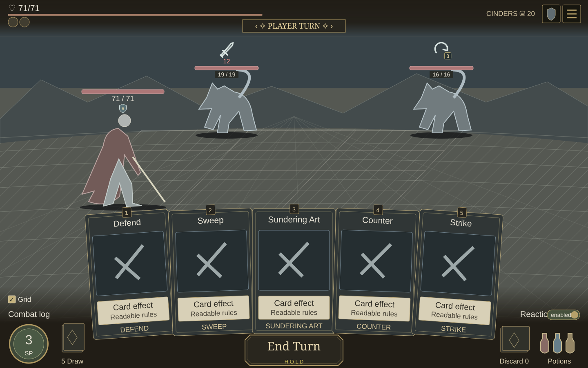
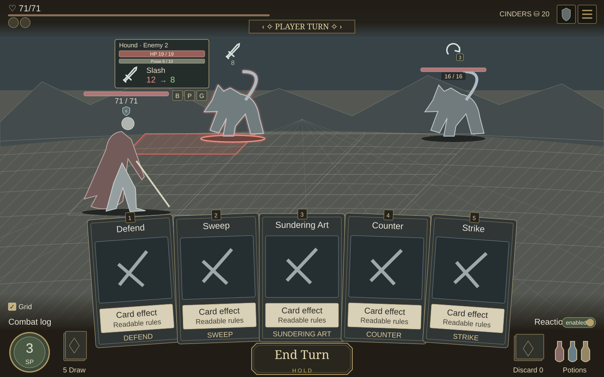
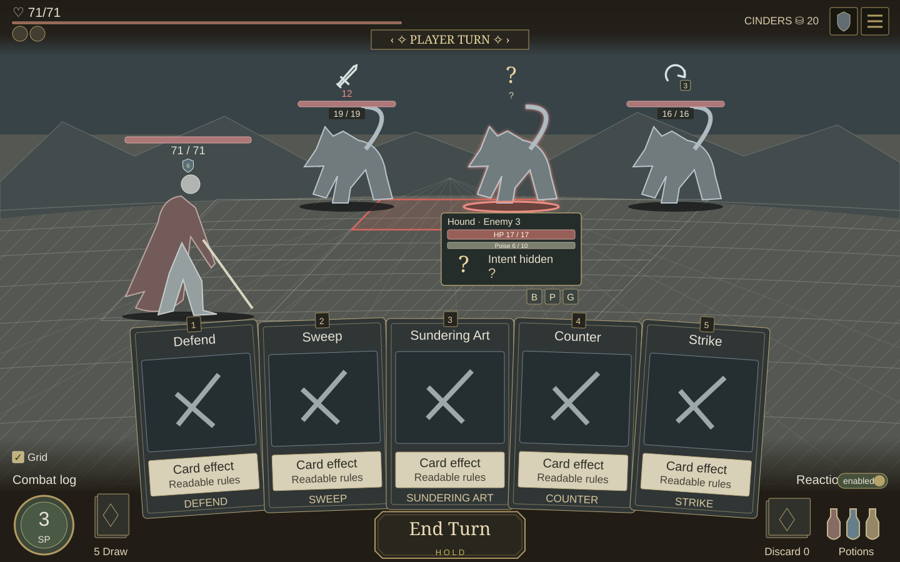
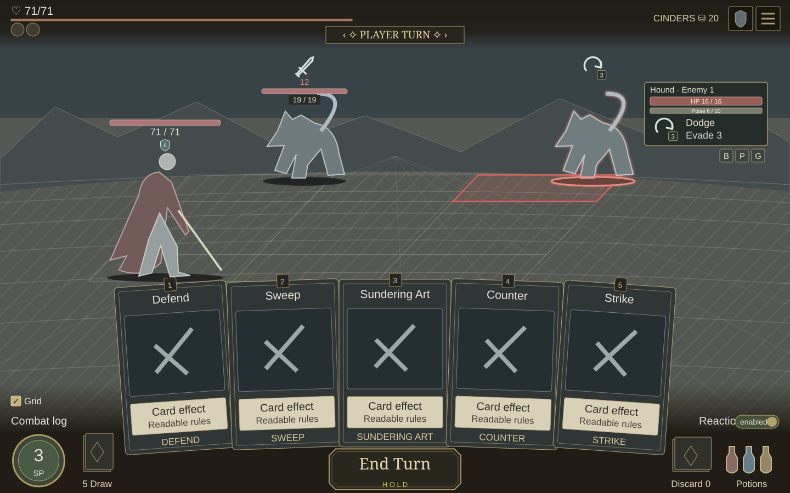
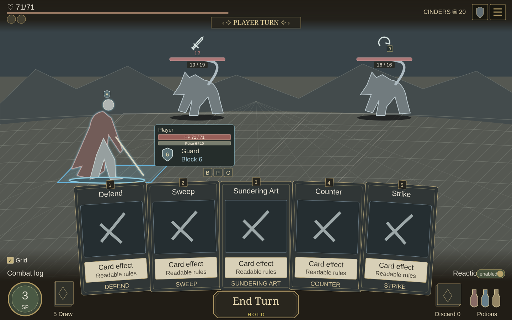
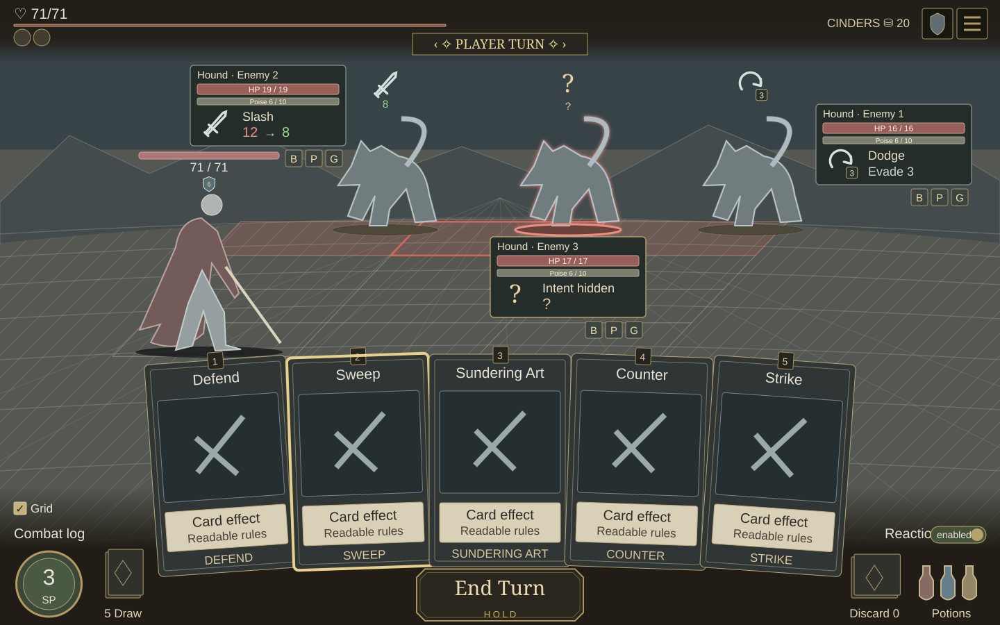
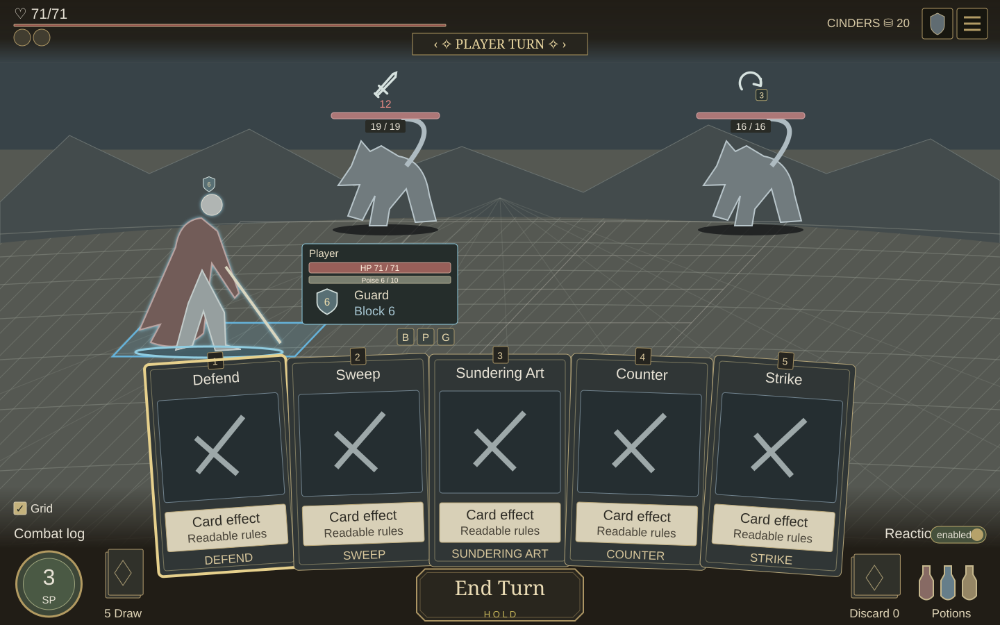

Target HUD · seven states for approval
Shared desktop layout, 1440×900. The current card fan, footer fade and control positions stay fixed.
Design only — no runtime changes. Damage, Poise and statuses are illustrative. Intent and damage stay hidden as “?” when unperceived.
Default enemy order: back [2] [3] [1] → front [6] [5] [4]
Two enemies: back LEFT + RIGHT, with the middle empty. Player starts bottom LEFT.
Interactive state selector
A · Idle · no detailed panel

Two enemies fill back right first, then back left. The middle cell is empty. Overhead intent and HP remain visible.
Full size ↗B · Left enemy focused

Enemy 2: panel left; status row below/right aligned. Stance advantage changes the illustrative perceived 12 damage to green 8 both overhead and in the panel; overhead HP is removed.
Full size ↗C · Middle enemy focused

Enemy 3: panel below. This enemy’s intent is unperceived, so both overhead and panel retain ? and reveal no move or damage.
Full size ↗D · Right enemy focused

Enemy 1: panel right, within the viewport. Dodge is centered in a larger icon with its small count in the bottom corner.
Full size ↗E · Left-column player focused

Player panel sits to the right of the left-column player. Overhead HP is removed; intent remains above the sprite.
Full size ↗F · Offensive card · eligible enemies

Sweep preselects all eligible enemies and opens their panels; the middle enemy has stronger focus. Left damage preview is green 8 both overhead and in its panel (illustrative 12 → 8 stance advantage). No automatic play.
Full size ↗G · Self-target card · player candidate

Defend preselects the player, with its panel on the right. The separate insets show middle/right player panels on the left. No play is committed.
Full size ↗Fixed presentation rules
Enemy panels: left → left; middle → below; right → right. Player: left → right; middle/right → left.
Overhead intent remains. Selected overhead HP moves into details. Statuses form one horizontal row below the panel, aligned bottom-right.
500ms governs detail stability only. Clicks, card targeting and gameplay remain immediate.
 Open self-target state and insets
Open self-target state and insets